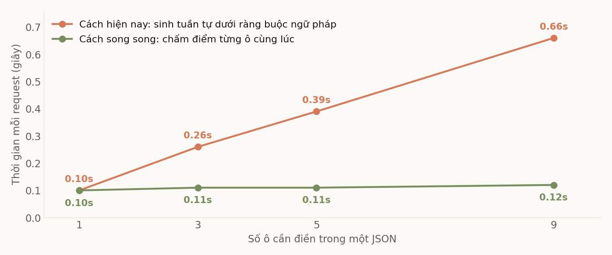
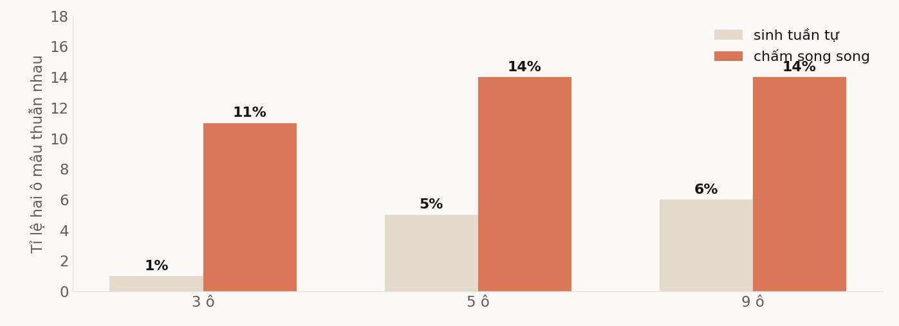

Vì sao điền phiếu lại chậm
Khi cần model trả về đúng khuôn JSON, sglang dùng xgrammar. Ở mỗi bước sinh, nó chặn mọi token làm hỏng cấu trúc, nên đầu ra luôn hợp lệ. Cách này chắc chắn và đang là mặc định ở khắp nơi.
Cái giá là nó vẫn sinh từng token một, theo thứ tự. Một phiếu ba ô phải sinh xong ô thứ nhất mới tới ô thứ hai. Thêm một ô là thêm một lượt sinh nữa, nên thời gian tăng gần như tuyến tính theo số ô, kể cả khi mỗi ô chỉ có hai lựa chọn đúng sai.
Nhưng với những ô kiểu đó, model đâu cần viết gì. Nó chỉ cần chọn. Và cái để chọn thì nó đã biết ngay sau khi đọc xong đầu vào.
Chấm điểm thay vì sinh chữ
Cách thay thế tôi thử tên là Jev, lấy từ một repo nhỏ công khai. Ý tưởng như sau. Cho model đọc đầu vào đúng một lần. Sau đó, với mỗi ô, ghép thêm một đoạn ngắn dẫn tới đúng chỗ phải điền, rồi nhìn phân phối xác suất ở token kế tiếp và chọn lựa chọn có điểm cao nhất. Không sinh chuỗi, không cần ngữ pháp chặn, không có ô nào phải chờ ô nào.
Có một mẹo nhỏ làm việc này gọn hơn nhiều: khi các lựa chọn của một ô có chung phần đầu, hãy nhét luôn phần chung ấy vào đoạn dẫn. Ba lựa chọn cùng bắt đầu bằng một tiền tố thì đoạn dẫn kết thúc ngay sau tiền tố đó, và việc chọn rút về so sánh đúng một token phân biệt. Cách này cũng khử luôn chuyện hai lựa chọn trùng token đầu.
Kết quả dễ thấy nhất nằm ở trường usage trả về: mọi request đi đường Jev đều báo completion_tokens bằng không, ở cả 154 mẫu và mọi số ô. Model không viết một chữ nào mà vẫn ra một JSON đầy đủ.

Độ chính xác từng ô thì hai bên ngang nhau. Trên tác vụ phân loại thật có đáp án, hai cách cho kết quả trùng nhau 94 tới 98 phần trăm số mẫu, và phần lệch chia đều về hai phía chứ không nghiêng hẳn về bên nào. Với cỡ mẫu 154, sai số vào khoảng bảy điểm, nên chênh lệch một vài điểm không đủ để kết luận bên nào hơn.
Cái giá nằm ở chỗ khác
Nếu chỉ nhìn tốc độ và độ chính xác từng ô thì Jev thắng không mất gì. Nhưng có một thứ nó phá vỡ theo đúng thiết kế.
Vì mỗi ô được chấm độc lập, không ô nào nhìn thấy ô nào. Cách tuần tự thì ngược lại: lúc điền ô thứ ba, model đã đọc được ô một và ô hai nó vừa viết ra.
Để đo, tôi đặt vào phiếu hai ô ràng buộc logic với nhau, kiểu một ô đúng khi và chỉ khi ô kia nhận một giá trị cụ thể. Không cần đáp án, chỉ cần đếm tỉ lệ hai ô nói ngược nhau.

Nên ranh giới dùng được rất rõ. Phiếu mà các ô độc lập với nhau thì Jev dùng được, và gần như miễn phí. Phiếu mà một ô suy ra từ ô khác thì không dùng được, vì cứ mười lần sẽ sai một. Ranh giới này nằm ở bản thân bài toán, không phải ở chất lượng cài đặt, nên không có bản vá nào gỡ được nó.
Bài học đắt nhất không nằm ở kỹ thuật
Trước khi có những con số trên, tôi đã kết luận sai ba lần. Cả ba lần đều nói Jev kém hơn hẳn, và cả ba lần đều là lỗi của chính tôi trong cách dựng phép đo.
Jev mất 20 điểm độ chính xác trên một trong hai model, nên kỹ thuật này không dùng được cho model đó.
Sai. Nhánh đo của tôi đi một cổng không tự áp khuôn hội thoại, nên thiếu một token đặc biệt ở đầu chuỗi mà model đó bắt buộc phải có. Model còn lại không dùng token ấy nên không dính, và suốt nhiều lượt đo tôi tưởng chênh lệch là do kỹ thuật chứ không phải do phép đo. Sau khi dựng lại khuôn cho đủ, hai model cho cùng một hình dạng kết quả.
Hai lỗi còn lại cũng cùng một kiểu. Tôi tự thêm vào một bước chấm điểm toàn chuỗi mà bản gốc không có, và nó làm tệ đi năm tới chín điểm vì thiên vị các lựa chọn ngắn. Tôi nhét một đoạn hướng dẫn nhiều dòng vào một khe vốn chỉ dành cho mô tả một dòng, và độ chính xác rơi xuống 45 phần trăm.
Cộng lại thì chênh lệch giữa các cách cài đặt của riêng tôi là hơn hai mươi điểm, trong khi chênh lệch giữa hai kỹ thuật là vài điểm nằm trong nhiễu. Tôi đã đi đo sự khác nhau giữa hai kỹ thuật bằng một cái thước mà sai số của nó lớn gấp năm lần thứ cần đo.
Điều rút ra không phải là hãy cẩn thận hơn. Là khi một kỹ thuật mới cho kết quả tệ bất thường, khả năng cao nhất không phải kỹ thuật tệ, mà là bản dựng lại của mình đang sai ở đâu đó. Phải đọc mã nguồn gốc trước khi kết luận, và tôi đã kết luận ba lần trước khi làm việc đó.
Một chỗ chưa giải thích được
Bản trong engine chạy trên cùng cụm với một thay đổi khác chúng tôi vừa đưa vào, là cách nén ảnh chụp trạng thái cho cache. Trên image có bật nén, độ chính xác từng ô của cách song song tụt thêm bảy tới mười điểm khi phiếu có từ ba ô trở lên, trong khi cách tuần tự không đổi. Ở một ô thì không có chênh lệch nào.
Giả thuyết của tôi là hai thứ này chạm nhau: Jev tách nhiều nhánh từ cùng một trạng thái đã cache, mà trạng thái đó nay được khôi phục từ bản nén và bản xấp xỉ, nên điểm số ở đúng token quyết định bị nhiễu. Cách tuần tự sinh liên tục từ một trạng thái duy nhất nên ít chịu ảnh hưởng. Một ô chỉ có một nhánh nên không thấy gì.
Đây mới là giả thuyết. Tách được nó bằng một lượt chạy có nén nhưng tắt phần lượng tử hoá, và tôi chưa chạy. Tôi viết ra đây vì nó là thứ người đọc bài trước nên biết.
Tóm lại
Với những phiếu mà các ô độc lập nhau, Jev cho cùng độ chính xác và thời gian gần như không tăng theo số ô, trong khi cách hiện nay tăng tuyến tính. Chín ô thì chênh hơn năm lần. Với phiếu có ô suy ra từ ô khác thì không dùng được, và đó là giới hạn của chính ý tưởng chứ không phải của bản cài đặt.
Phần đáng mang đi lại là phần không liên quan gì tới JSON. Khi bạn đo một kỹ thuật mới bằng bản dựng lại của chính mình, thứ bạn đo được rất có thể là chất lượng bản dựng lại đó. Cách rẻ nhất để biết là mở mã nguồn gốc ra đọc, trước khi viết dòng kết luận đầu tiên.